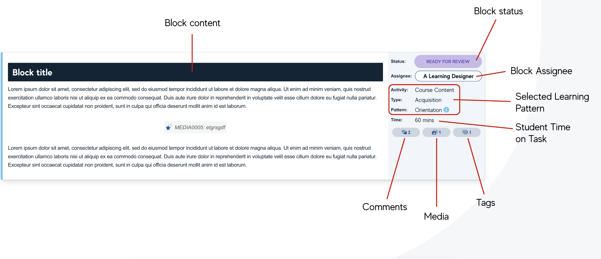

Smart Storyboard
With the our increasing focus on collaboration we needed a tool to bridge the gap between planning and production. Existing approaches relied on static documents and proved unreliable and inefficient. Word files passed back and forth got out of sync and failed when in the cloud. Tracking spreadsheets were disconnected from the workflow and created bottlenecks and confusion. We needed a tool purpose-built for our collaborative, iterative approach to course development.
Smart Storyboard was developed in-house to enable collaborative design and development of courses and learning experiences. The tool emerged from the team's frustration with existing solutions that couldn't support the way we wanted to work. Rather than adapting our process to fit available tools, we built a tool that supported our process.
Key Requirements
The central aim for developing Smart Storyboard was to tackle key problem areas we encountered in every course development cycle and replace practices based on updating static documents:
- Manage workflow throughout the course development process
- Allow tasks, statuses, and responsibility to be assigned to different aspects of the course
- Break the course into manageable scaffolded components that could facilitate multiple authors and collaborators
- Aid the coordination of media and course build
- Allow the course to be developed using the same visual style as the Learning Management System
- Provide automatic real-time reporting using detailed tracking data
Developing Smart Storyboard
Smart Storyboard was built iteratively throughout the project, with new features and refinements emerging from ongoing use and feedback. The development process itself embodied the agile, collaborative approach we were trying to enable—the tool evolved alongside our understanding of what we needed.
Early versions focused on basic content authoring, visual representation and workflow. As the team used the tool, we identified needs: automated reporting to track development and ensure project managers had visibility of progress, centralising media into the system to ensure the team knew what resources were required and elements were centrally located. Each iteration added functionality that solved real problems the team was facing.
The integration of Learning Types and Patterns into the tool was particularly significant. Smart Storyboard allowed us to track these elements in realtime. This meant pedagogical decisions were visible and actionable throughout development, not abstract concepts in a separate planning document. We could analyse the experience being developed to what had been planned and see how they matched. We could highlight and fix gaps and issues that became visualised in the system.
By the project's end, we had created a tool that provided the team with an authoring environment enabling modular course design and agile workflow, with features that supported the development of quality learning experiences.
Using Smart Storyboard
Modular Development
Smart Storyboard broke courses into hierarchical components (modules, lessons, and blocks) that could be developed independently while maintaining coherence across the whole course. This modularity allowed multiple Course Authors to work simultaneously on different parts of the course without conflicts or confusion. Each block could be assigned to specific authors, given a status, and tracked individually.

This structure also aligned perfectly with Learning Patterns. Each block in Smart Storyboard could be tagged with its Learning Types and Patterns, making the pedagogical intent explicit. As Course Authors built lessons, they could see the sequence of patterns unfolding and ensure appropriate variety and progression. The tool made it impossible to lose sight of the learning design while focusing on content development.
Workflow Management
Smart Storyboard transformed course development from a linear, document-based process into a dynamic, collaborative workflow. Tasks could be assigned to different team members — Course Authors wrote content, Learning Designers reviewed pedagogical alignment, media teams produced videos and graphics, developers built interactive elements. Each person could see exactly what they needed to do and when, with status updates visible to the entire team.
The tool supported iterative development. Course Authors could submit a draft for review, receive feedback directly in the tool, revise, and resubmit, all without emailing files back and forth. This supported the agile approach we wanted, where courses evolved through multiple passes rather than being "finished" in a single draft.
Visual Authoring Environment
One of Smart Storyboard's most valuable features was allowing course development using the same visual style as the Learning Management System. Course Authors could see their content as students would experience it, rather than imagining how formatted text in a Word document would eventually appear. This WYSIWYG (What You See Is What You Get) approach reduced misunderstandings and rework.
The visual environment also helped Course Authors understand pacing and flow. Seeing lessons laid out visually made it obvious when too much text overwhelmed a page, when interactive elements needed to break up content, or when the sequence didn't flow logically. Design decisions that were abstract in planning documents became concrete and actionable in Smart Storyboard.
Real-Time Reporting
Smart Storyboard automatically generated reports based on tracking data, giving project managers and stakeholders visibility into progress without manual status updates. Reports would show percentage completion rates across lessons and modules, identify bottlenecks where work was stalled, and forecast timelines based on current progress. This data-driven approach aided project management and replaced the guesswork often involved in the process.
An Integrated System
Smart Storyboard didn't exist in isolation — it was the production hub where planning became reality. The Course Workspace in Miro established the overall structure and pedagogical approach, which then transferred into Smart Storyboard for detailed development. Learning Types and Patterns, defined conceptually in our framework, became practical tools within Smart Storyboard's interface. Smart Storyboard would output clean code that was usable across multiple Learning Management Systems and sped up production and course builds.
By building Smart Storyboard to support our specific way of working, we created a tool that didn't just manage course development—it embodied our pedagogical values and collaborative approach. The tool made it easier to do high-quality work and harder to drift away from our principles.